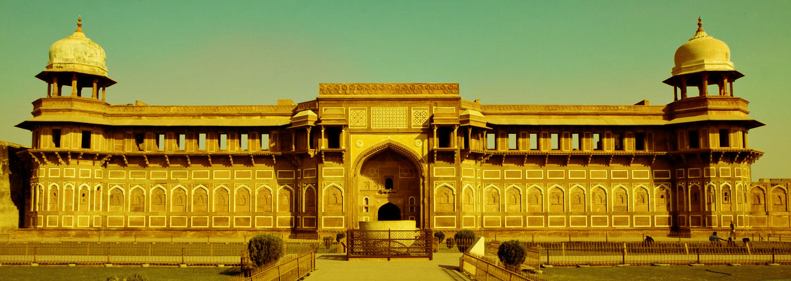
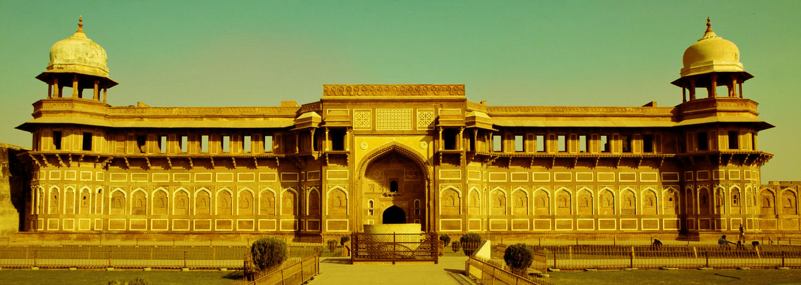

era marked by invasions and fortifications, where power was symbolized by grand palaces and grander forts………during such time was built THE AGRA FORT. Fortification has always been and still is the prerogative of the mighty; the dividing line between the ruler and the ruled. The mighty towers and overwhelming facades instilling fear and awe in the bravest of the brave…….yet there were the few who overcame the daunting adversities and made their mark in history, a signature ……. that still exists. Structures built as a sign of prowess remind us all of the grit and valour of the brave men and women who captured, destroyed and built such overwhelming edifices. The Agra Fort, also known as the “Lal –Qila”, “Fort Rouge” or “Qila-i-Akbari”, is the highlight of the city of Agra, then capital of the Mughal Sultanate . A symbol of power, strength and resilience, as it stands today in full glory.
Read more 

The invaluable ensemble of 34 caves at Ellora in the Charanandri hills of western India’s Maharashtra State showcases a spirit of co-existence and religious tolerance through the outstanding architectural activities carried out by the followers of three prominent religions: Buddhism, Brahmanism, and Jainism. The rock-cut activity was carried out in three phases from the 6th century to the 12th century. The earliest caves (caves 1–12), excavated between the 5th and 8th centuries, reflect the Mahayana philosophy of Buddhism then prevalent in this region. The Brahmanical group of caves (caves 13–29), including the renowned Kailasa temple (cave 16), was excavated between the 7th and 10th centuries. The last phase, between the 9th and 12th centuries, saw the excavation of a group of caves (caves 30–34) reflecting Jaina philosophy. Amongst the caves of the Buddhist group, Cave 10 (Visvakarma or Sutar-ki-jhopari, the Carpenter’s cave), Cave 11, and Cave 12 (Teen Tal, or three-storied monastery, the largest in this category) are particularly important. These caves mark the development of the Vajrayana form of Buddhism and represent a host of Buddhist deities. The prominent caves of the Brahmanical group are Cave 15 (Dasavatara, or Cave of Ten Incarnations), Cave 16 (Kailasa, the largest monolithic temple), Cave 21 (Ramesvara), and Cave 29 (Dumar Lena). Amongst these, Cave 16 is an excellent example of structural innovation, and marks the culmination of rock-cut architecture in India featuring elaborate workmanship and striking proportions. The temple is decorated with some of the boldest and finest sculptural compositions to be found in India. The sculpture depicting Ravana attempting to lift Mount Kailasa, the abode of Siva, is especially noteworthy. The remains of beautiful paintings belonging to different periods are preserved on the ceilings of the front mandapa (pillared hall) of this temple. The Jaina group of caves (caves 30 – 34) is exquisitely carved with fine, delicate sculptures, and includes fine paintings dedicated to the Digambara sect. Through their art and architecture, the Ellora Caves serve as a window to ancient India, including socio-cultural phenomena, material culture, politics, and lifestyles.
Read more